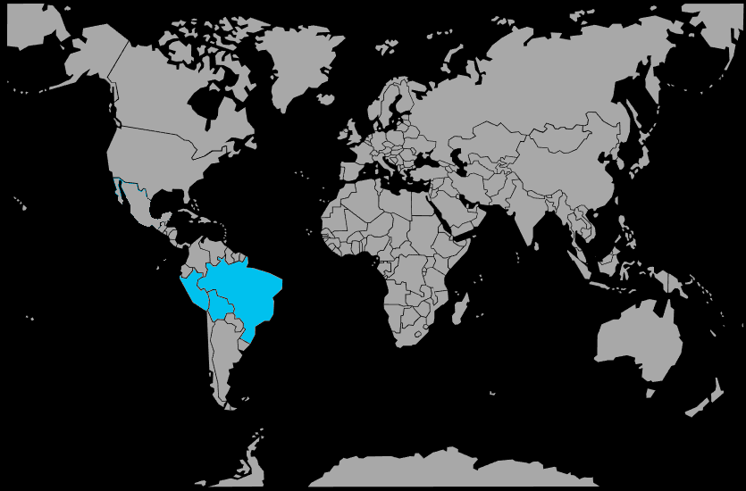

Systématique
- Ordre : Cichliformes
- Famille : Cichlidae
- Sous‑famille : Geophaginae
- Genre : Apistogramma
- Espèce : Apistogramma agassizii
Apistogramma agassizii est un cichlidé nain amazonien très répandu en aquariophilie, connu pour ses nombreuses formes de couleur sélectionnées et sa silhouette élancée typique du genre.
Les mâles atteignent environ 7 à 8 cm, les femelles 5 à 6 cm, et l’espèce occupe principalement la zone inférieure et médiane dans des aquariums de type amazonien richement structurés.
L’espèce est territoriale, surtout chez les mâles en période de reproduction, mais reste gérable dans un bac bien aménagé avec de nombreuses cachettes et des colocataires calmes de petite taille.
Apistogramma agassizii se maintient de préférence en couple ou en harem (un mâle pour plusieurs femelles), chaque femelle occupant une petite zone autour de sa cachette.
Mode : ovipare, pondeur en cavité; la femelle choisit une grotte, une noix de coco ou un abri sous une racine pour y déposer les œufs, qu’elle ventile et protège.
Le mâle défend les abords du territoire, tandis que la femelle garde les œufs, les larves puis les alevins en nuage serré; une eau très douce et légèrement acide facilite l’éclosion et la croissance des jeunes.
Dimorphisme sexuel : marqué; les mâles sont plus grands, plus colorés, avec une nageoire dorsale allongée et souvent des pointes sur les nageoires impaires, alors que les femelles sont plus petites et jaunissent fortement en période de ponte.
Espérance de vie : en captivité, Apistogramma agassizii vit en moyenne 4 à 5 ans dans de bonnes conditions de maintenance.
L’espèce fréquente les zones calmes et peu profondes de bras morts, criques forestières et forêts inondées, où le fond est couvert de feuilles, de branches et de racines dans une eau douce, acide et parfois brunâtre.
Répartition
Origine naturelle :
- Bassin de l’Amazone en Amérique du Sud.
- Affluents du rio Solimões/Amazonas au Brésil, au Pérou et en Colombie.
- Présence signalée dans divers systèmes secondaires (rio Negro, rio Ucayali, rio Japurá, etc.).
L’espèce est largement répandue dans les réseaux de petites rivières et de forêts inondées du bassin amazonien central et occidental, dans des eaux lentes ou stagnantes.
Paramètres de maintenance
Température : 24 à 27 °C.
pH : 5,0 à 7,0, avec une préférence pour une eau légèrement acide.
GH : 1 à 8 °dGH, eau douce à très douce.
Courant : faible, avec une filtration douce et de nombreuses zones calmes.
Volume conseillé : à partir de 80–120 L pour un harem, avec beaucoup de cachettes (racines, feuilles, grottes).
Régime alimentaire
Régime : omnivore à tendance carnivore; dans la nature, il consomme petits invertébrés, larves d’insectes et micro‑faune du substrat.
En aquarium, il apprécie particulièrement les nourritures vivantes et congelées (artémias, daphnies, vers), complétées par des granulés fins de bonne qualité.
Une alimentation variée et riche en proies vivantes favorise une belle coloration, une bonne croissance et des reproductions régulières.